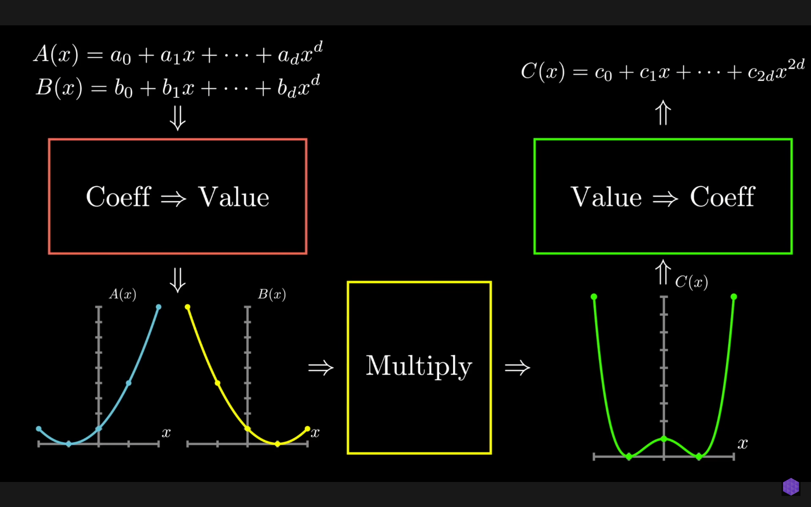

# Overview
分治本身没什么能多说的
构建分治的核心在于怎么 merge；
配合主定理 or 递归树，即可求解时间复杂度
# 多项式乘法（FFT）
视频教程
利用插值思想，我们在计算多项式乘法时，新奇的选择把<a0,a1,…,an−1>evaluate 为n+1 维点

之后经过叹为观止的操作，红框变为O(nlogn)，红黄框变为O(n)，红框变为O(nlogn)
红框是分支算法的体现处，其核心在于把原多项式分解为：
P(x)=xPodd(x2)+Peven(x2)
P(x) 函数被我们定义为：对于n−1 次多项式a(x)
- 输入为<a0,a1,…,an−1> 和向量x，x 长度为k
- 计算其多项式结果y，y 长度为k
若对称取点，那么对于k/2 个点：
y1y2⋮yk/2=y1′y2′⋮yk/2’=yodd1yodd2⋮yoddk/2∘yodd1yodd2⋮yoddk/2∘x1x2⋮xk/2−x1−x2⋮−xk/2+yeven1yeven2⋮yevenk/2+yeven1yeven2⋮yevenk/2
有了yodd，yeven 两个向量，那剩下的工作就是：
- yodd 与向量x（或−x）的一半对应位置相乘，O(k)
- 相加，O(k)
计算量削减的核心：选定的点是[±x1,…,±xn]，平方后需要计算的向量维度减半。比如一开始要算 32 个点[±x1,…,±x16] 的多项式结果y，平方后只要算 [x12,…,x162] 16 个点的多项式结果
当k 是n 的一次函数（k=nork=2n−1），那么P(x) 函数的时间复杂度：
T(n)=2T(n/2)+O(n)
根据主定理，T(n)=O(nlogn)；
分治的出口为n=1，此时多项式为常数函数
无论是 evaluate 多项式a(n)，n−1 维多项式找n 个点
还是 evaluate 多项式相乘结果a(n)b(n)，2n−2 维多项式找2n−1 个点
此时找一个点即可